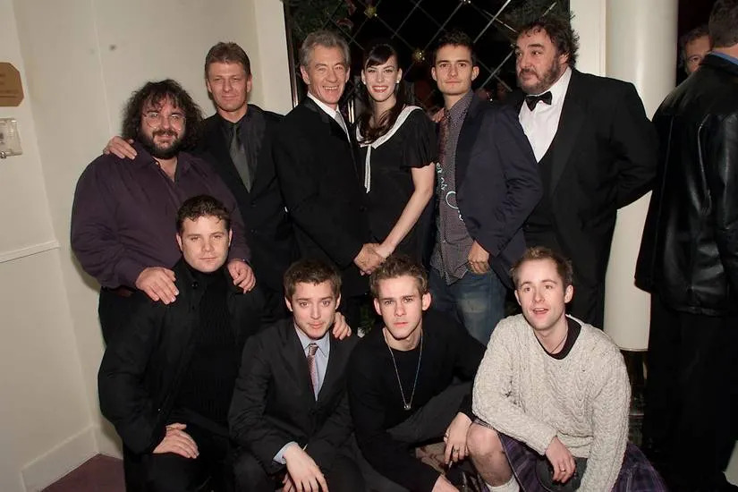

Fun Facts About LOTR
- The trilogy was filmed in New Zealand over 438 days.
- Viggo Mortensen carried a real sword during filming.
- J.R.R. Tolkien created entire Elvish languages.
- Gollum’s voice was inspired by a cat coughing up a hairball.
- The actors got matching tattoos of the Elvish word for "nine."
- Sean Bean (Boromir) read his script on his knee during the Council scene.

Watch the Trailer